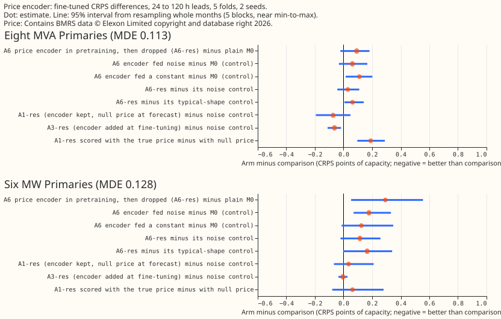
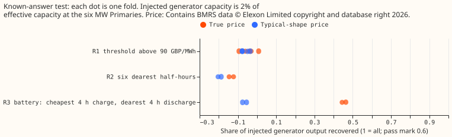

Does training a price encoder on the true electricity price give the weather and datetime encoders of the modular lag-free demand network cleaner supervision, even though price is absent at forecast time?
Status: finished. One combined review and audit checked every number; the findings are in the pull request.
Take-home message. We asked whether teaching a neural network that forecasts substation demand about electricity prices, while it learns from weather and calendar inputs, would make its weather and calendar parts learn cleaner patterns. The price part is thrown away before the forecast is made, so no price feed is needed in production. The price part did not improve the forecast. After fine-tuning, the forecast was worse than a forecast built without any price part: by 0.29 points of capacity at the six MW Primaries and by 0.09 at the eight MVA Primaries. Errors are CRPS (continuous ranked probability score) in points of effective capacity; smaller is better. A control that fed the same extra part noise gave 61% of the harm at the six MW Primaries, and a constant gave 43%, so most of the harm comes from the extra part. A controlled test, in which we added a synthetic price-driven generator to the six MW Primaries, showed the price part could not find the simple threshold or rank rules, and found a battery rule only partly. The next step is a repeat of that controlled test with a generator large enough to see, before any more real-data price work. The verdict is not supported.
What was done
- Network and folds. The modular lag-free network of experiment 554 (arm M0), on experiment 511's five folds, July 2026 unused, refitted once a month, 2 seeds (0 and 1). Pre-training used the same ERA5 and CAMS rows as experiment 554, written again here for every arm so that arms differ only in the price part. Fine-tuning followed experiment 554's M0 recipe exactly, with a fresh mixer.
- The price encoder. A new neural network part that reads three windows of the true price (97 half-hours either side of the target, 7 days of hourly means, and 28 days of daily summaries), a short vector of hand-made shape features, a bank of eight learned price-day shapes, and attention over the fine window. The price encoder outputs 16 numbers, or a learned null vector when price is absent. Price comes from Elexon's market index price, the system price minus the market index price, and the net imbalance volume, 2019-09 to 2026-09, fetched for this experiment (see below).
- Arms. A6: price encoder in pre-training only; the weather encoder, datetime encoder, and
embedding go to a fresh price-free mixer. A1: price encoder kept in fine-tuning, present in a
seeded 50% of rows, null vector at forecast. A3: as A1 but the encoder is new at fine-tuning. Each
comes with price inputs of kind
res(calendar-residualised),raw,p1(a shuffled day),p2(the typical shape for month, half-hour, and day type),noise, orconst. M0 is the control with no price part. A "-oracle" arm scores the same fitted networks with the true price present. M0-R of the brief is identical to M0 here, because M0's fine-tuning mixer is already fresh. - Standing rules. Every weather input comes from the run issued at or before the forecast origin, asserted row by row, with one example row printed per fold. Price windows may look 14 days forward in the oracle (true price) but are cut at the refit time for every training row, so no price from the test month reaches training. Scoring reads the uncut series only for the "-oracle" arms.
- Price data and licence. See the last section.
Results

- Absolute CRPS, 24 to 120 h leads. Plain M0: 4.834 (eight MVA Primaries) and 3.633 (six MW Primaries). A6-res: 4.926 and 3.926. A6 fed noise: 4.896 and 3.811. A6 fed a constant: 4.945 and 3.758. A3-res: 4.784 and 3.748. A1-res: 4.875 and 4.118.
- None of the six counted tests passes. The tests are T1 and T2, A6-res minus A6-noise; T3 and T4, A1-res minus A1-noise; at the eight and the six, 24 to 120 h, Bonferroni count 6. A6-res minus A6-noise is +0.03 at the eight (minimum detectable effect, MDE, 0.113) and +0.115 at the six (MDE 0.128): worse, not better, and below the MDE. A1-res minus A1-noise is -0.073 at the eight (3 of 5 folds better) and +0.035 at the six. T5 and T6 (arm A7) were not run.
- Pre-training with price made the fine-tuned stack worse. A6-res minus M0 is +0.092 at the eight (interval -0.022 to +0.181, 4 of 5 folds worse) and +0.293 at the six (interval +0.053 to +0.555, 5 of 5 folds worse). Noise and constant inputs account for much of it (+0.06 and +0.11 at the eight, +0.18 and +0.12 at the six). At the six, A6-res was also worse than the constant-fed control by 0.168 (5 of 5 folds, driven by the 2026-01 fold at +0.58) and than the noise-fed control by 0.115; at the eight it was 0.019 better than the constant-fed control. One Primary carries much of the six's harm: its A6-res minus M0 gap, in unnormalised CRPS, is about 0.86 against at most 0.24 at every other Primary of the 16, so the six-Primary result rests mainly on one series. Prediction A6-1 (a gain of at least 1% at the Primaries) fails.
- Which kind of price did least harm. Raw price beat residualised price (
res) at the eight by 0.05 (A6-raw minus A6-res -0.051, within the MDE, raw better in 4 of 5 folds). Prediction A6-4, that raw would be worse by at least 0.03 points, fails in the opposite direction. A6-res was 0.05 worse than its shuffled-day control at the eight and 0.235 worse at the six (5 of 5 folds each). The typical-shape control (p2) was better than the real price by 0.063 and 0.165. - Scoring with the true price was not better. A1-res scored with the true price minus scored with the null vector: +0.19 at the eight (5 of 5 folds worse, interval +0.096 to +0.289) and +0.063 at the six. The kept encoder, shown the true price, did worse than with the null vector.
- Pre-training validation loss. Mean validation negative log-likelihood over 5 folds and 2 seeds (oracle price present, lower is better; the early stopping also reads this loss, and A6 arms stopped after 22 to 26 epochs on average against 40.5 for M0): M0 0.4891, A6-p2 0.4765, A6-const 0.4917, A6-raw 0.4996, A6-res 0.5034, A6-p1 0.5345, A6-noise 0.5489. A6-res is above M0 in 5 of 5 folds (+0.005 to +0.024). The typical-shape price is below M0 in 5 of 5 folds (-0.001 to -0.024).
- Leave-D8-out. A6-res minus M0 is +0.087 at the eight without D8 (interval -0.024 to +0.192, 3
of 5 folds worse) and +0.127 at D8 alone (interval -0.183 to +0.423); the sign matches the
eight's. D15 and D18 are report-only; every set is in
work/scores/contrasts.csv.
Known-answer test

The price part recovered a battery rule only partly and the other two rules not at all. We subtracted a synthetic price-driven generator from the six MW Primaries' pre-training rows, at 2% of each Primary's effective capacity (0.1 to 0.2 MW), and asked how much of the injected output the price part's forecast change recovered. M0 without price was trained on the same rows to give the baseline. "Recovered" is one minus the mean squared gap between the injected output and the forecast change, relative to the mean squared injected output; 0.6 is the pass mark of the brief. The share can be negative, and a separately trained network gives values near -0.1 to 0 from seed noise alone, so a share in that band means "indistinguishable from nothing". The held-out rows are the weeks that also drive early stopping, which makes the shares mildly optimistic, and the "real" price features are the raw kind, not the residualised kind of the headline arm.
- K2 fails for the threshold and rank rules. R1 (full output above 90 GBP per MWh) recovered -0.09 to +0.01 across 5 folds, and R2 (six dearest half-hours) -0.15 and -0.12 (2 folds). The learned threshold (K1) was never found: the fitted response did not reach half of full output at any price, and the gain at prices above 150 GBP per MWh was 11% to 18% of capacity, against 100% injected.
- R3, the battery rule, was found partly. Recovered 0.46 and 0.44 (2 folds), below the 0.6 pass mark. The typical-shape control recovered -0.06 and -0.08, so the recovery is price-specific (K3 passes for R3 only; for R1 and R2 the control also recovers negative values, so K3 says nothing).
- K4 was not run in the intended form. The brief's test fine-tunes after discarding the price part. We ran only a pre-training form: contaminating the training rows only, and scoring clean rows. The price network scored worse (validation NLL 0.853 and 0.809 against 0.698 and 0.675 for M0), consistent with the price network applying the rule to clean rows that do not obey it. The loss also drives early stopping, so model selection contributes. This says nothing about damage to the discarded-encoder stack. K4 is not tested.
- The injected generator may be too small. At 0.1 to 0.2 MW it is small beside the forecast error (not computed here). A failure to recover it shows the encoder at this size cannot see a 2%-of-capacity rule, and does not show the encoder cannot learn such rules.
Step 0 (report-only)
- Step 0(a). Stored experiment 554 M0 forecast residuals of the 16 Primaries, on the months of
price then on disk, regressed on same-time price features after removing the half-hour-by-weekend
mean: in-sample R-squared 0.2% to 4.1%, and leave-one-month-out R-squared negative at all 16
(-0.3% to -16%). This regression does not transfer across months. It does not rule out a nonlinear
rule. Script:
e00570_step0a.py. - Step 0(b) and 0(c) were not run: the metered-battery check and the measured BSP-and-GSP minimum detectable effects. The MDEs quoted are the brief's two-seed values.
What was not done
The brief listed more arms than the 6 GPU-hour budget allowed. Not run: the national-weather part of the residualisation (the residual is calendar-only), arm A7 and its shuffled control, arm A6-F (frozen encoders), the feature ladder and arm G1, the four BSP and GSP pooled structures, the probes of the encoder outputs (A6-2) and partial dependence, and the oracle arms A4 and A5. The known-answer test covers only the six MW Primaries, rule R1 on 5 folds and rules R2 and R3 on 2 folds; the K1 minimum run time is not measured; the shuffled-day control was dropped from it. No cold-night, Christmas, tail coverage, or curtailment-cost slice was scored, and the page draws no example forecast.
GPU time was about 5.3 hours by the worker's own estimate; no GPU accounting was kept, and the logs span about 7.3 hours of wall clock including failed runs and the known-answer test.
Checks
- Triggers that fired. (1) Controls failed: the known-answer test failed for R1 and R2. (5) A control that should change nothing moved the score by more than its own paired interval's half-width: the noise-fed and constant-fed encoders moved CRPS by +0.18 and +0.12 at the six. The audit that these triggers call for is in the pull request.
- Scored rows. Each fold's forecasts cover targets inside the fold month only (237,026 to 194,792 rows per fold of the experiment 511 row set; 1,145,256 over the five folds, 1,142,520 with every arm finite).
Lessons for later experiments
- Do not add a price encoder to pre-training of the modular lag-free network. A noise-fed encoder of the same size gives 61% of the harm at the six MW Primaries, so the extra encoder is what lowers accuracy.
- A known-answer test must inject a visible generator. At 2% of capacity, the test cannot tell "the encoder cannot learn the rule" from "the rule is below the noise".
- The typical-shape price lowered pre-training validation loss in 5 of 5 folds. Calendar information fed through the encoder may help pre-training; this page did not test it.
Price data and licence
- Licence: "Copyright: Licence to use BMRS open data", Elexon Limited (https://www.elexon.co.uk/bsc/operations-settlement/bsc-central-services/balancing-mechanism-reporting-agent/copyright-licence-bmrs-data/), read verbatim on 2026-11-05. It grants "a worldwide, royalty-free, perpetual, non-exclusive licence to Use the BMRS Data", and the licence text lists copying, publishing, distributing, and adapting among the permitted uses. It sets no research-specific term and no limit on publishing derived results. Attribution line, required on every chart of price data: "Contains BMRS data © Elexon Limited copyright and database right 2026."
- Fetch: market index price (
APXMIDPprovider) and system price with net imbalance volume, for 2019-09-01 to 2025-08-31, through the public keyless API with 2 threads, at no cost. Saved under this experiment's private data folder (market_early/), never committed. The longer series, joined to the cached later days, is*_2019-09_to_2026-09.parquetthere. - Gaps: 71 whole days of market index price and 9 whole days of system price are not published (listed by the fetch script); the price encoder treats them as missing.
- Definition is unchanged across the span: the system sell and buy prices are identical in every row from 2019 to 2026 (single imbalance price), and every zero market index price coincides with zero traded volume, so zero-volume rows are masked. The market index mean is 37 GBP per MWh in 2019, 198 in 2022 (the gas shock), and 72 to 103 in 2024 to 2026, which is why the transform normalises by trailing 28-day statistics.
Maintainer decisions
- Step 0 was report-only and the known-answer test a check, not a gate (2026-11-05). The real-data arms ran regardless, with the budget capped at 6 GPU-hours.